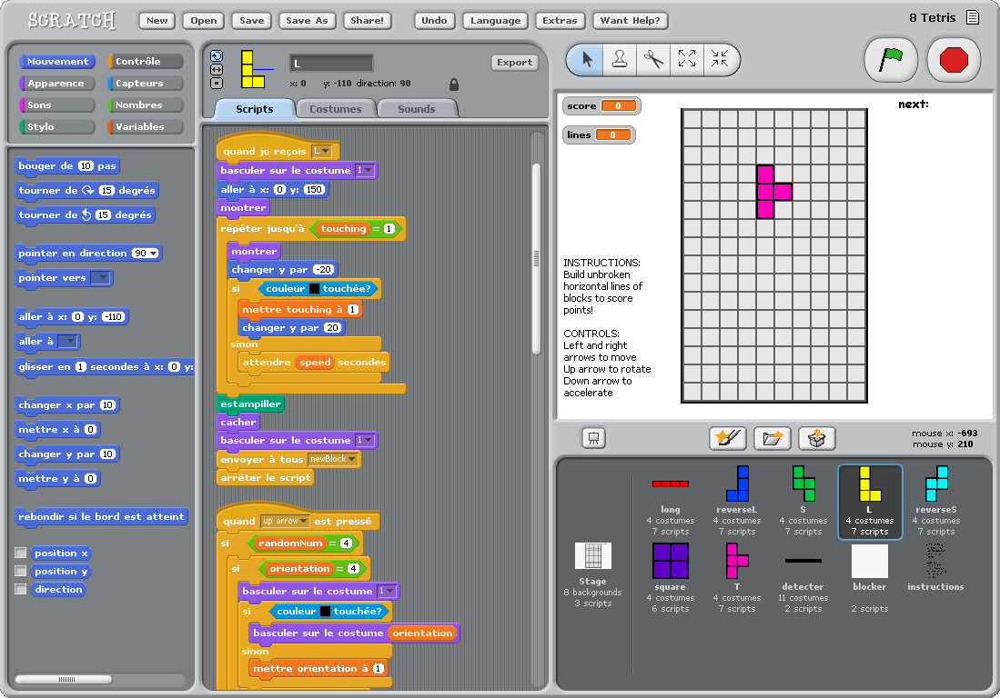
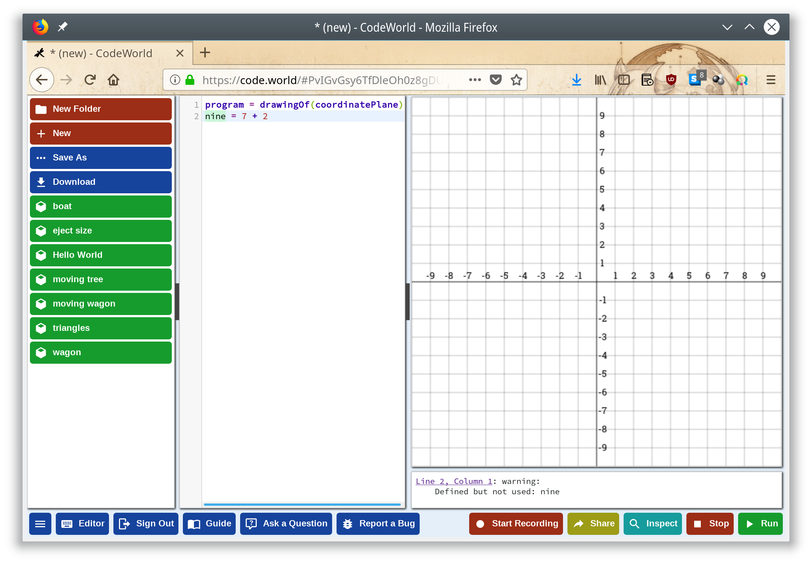
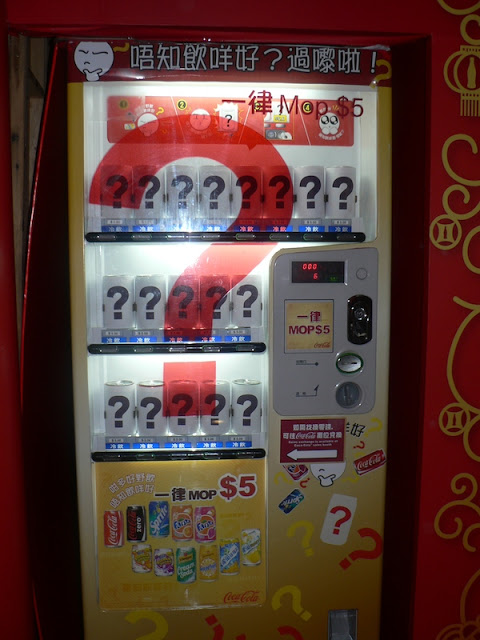
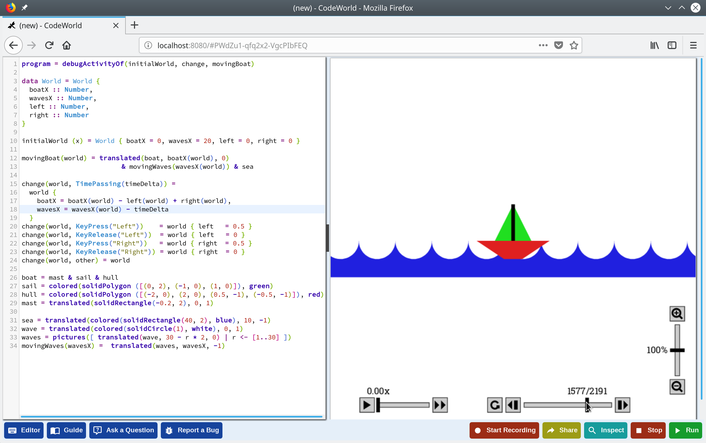
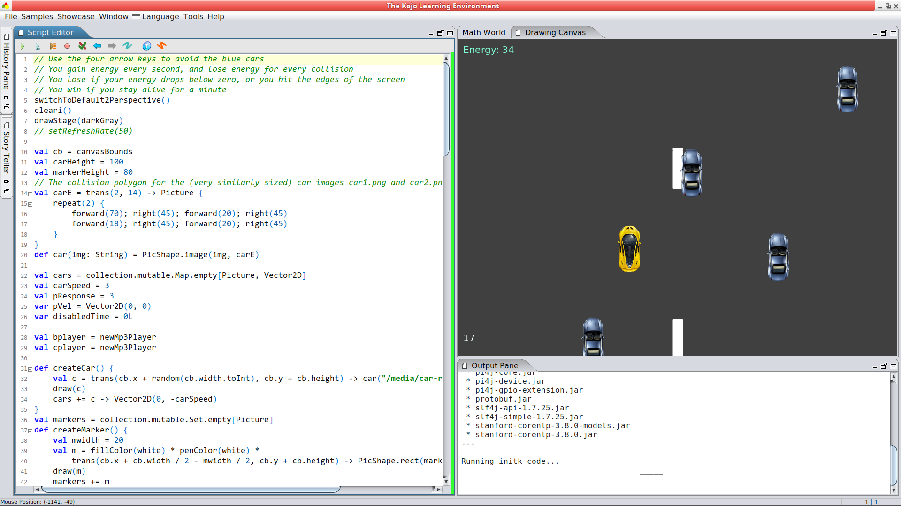

5 CLS
30 INPUT "How many stars do you want?"; NUMBER
40 FOR I = 1 TO NUMBER
50 STAR$ = STAR$ + "*"
55 NEXT I
60 PRINT STAR$
70 INPUT "Do you want more stars "; STAR$
80 IF LEN(STAR$) = 0 THEN GOTO 70
90 STAR$ = LEFT$(STAR$, 1)
100 IF (STAR$ = "Y") OR (STAR$ = "y") THEN GOTO 30CodeWorld
whoami
développeur backend @ Lizeo
@pulsati0n
De quoi allons-nous parler?
Les outils "traditionnels"
Une approche différente
utiliser CodeWorld
Comment ça fonctionne
Les outils "traditionnels"
Il y a très, très longtemps
Aujourd’hui

Aujourd’hui

Une approche différente
S’appuyer sur le paradigme fonctionnel
Évaluer des fonctions plutôt qu’exécuter des séquences d’instructions
Éviter les données mutables
CodeWorld, c’est quoi
Origine : Haskell for kids
Des maths :
Sans langage intermédiaire
Créatives
Pourquoi Haskell
\$f(x) = {(x^2|x<0),(x^3|x>=0):}\$
// En C
double f(double x) {
if (x < 0) return pow(x, 2);
else return pow(x, 3);
}-- En Haskell
f(x) | x < 0 = x^2
| x >= 0 = x^3Nous ne sommes pas (encore) des machines
Une échelle de 0 à 10 plutôt que des pixels
Des définitions non séquentielles (dictionnaire)
Origine des coordonnées au centre de l’écran
X est l’axe horizontal
Utiliser CodeWorld
À quoi ça ressemble

À quoi ça ressemble

Formes géométriques
circle(Number)rectangle(Number, Number)polygon([Point])Formes pleines
Transformations
Ajouter de la couleur
Déplacer
Faire pivoter
Agrandir / réduire
Combiner (
&)
Quelques notions
Expressions
Définitions
Fonctions
Types
Expression
Une combinaison de symboles:
7 + 2
x + 1Définition
Donner un nom à une expression:
nine = 7 + 2
increment(x) = x + 1Ceci est une poêle

La machine mystère

Type
Qu’est-ce qui est manipulé? De quoi on parle?
five :: Number = 5
alphaOmega :: Text
alphaOmega = "αω"
increment :: Number -> Number
increment(x) = x + 1Quelques types
program :: Program = drawingOf(lettering(helloWorld)
& redTriangle)
height :: Number = 2
points :: [Point] = [(-1, 0), (1, 0), (0, height)]
triangle :: Picture = solidPolygon(points)
lightRed :: Color = RGB(1, 0.6, 0.6)
redTriangle :: Picture = colored(triangle, lightRed)
helloWorld :: Text = "Hello, world!"Prise en main
Exemple réel
Dessiner
program :: Program = drawingOf(wagon)
wagon :: Picture = wheels & container
container :: Picture = rectangle(5, 2)
wheel :: Picture = solidCircle(1)
rightWheel :: Picture = translated(wheel, 1.5, -1)
leftWheel :: Picture = translated(wheel, -1.5, -1)
wheels :: Picture = leftWheel & rightWheelL’éditeur
Le bouton Editor affiche les raccourcis
Autocomplétion (ctrl+space)
Rainbow brackets
Animer
program :: Program = animationOf(movingWagon)
[...]
movingWagon(time) = translated(wagon, time, 0)Haskell
import CodeWorld
main :: IO ()
main = drawingOf(wagon)
wagon :: Picture
wagon = wheels & container
container :: Picture
container = rectangle 5 2
wheel :: Picture
wheel = solidCircle 1
rightWheel :: Picture
rightWheel = translated 1.5 (-1.0) wheel
leftWheel :: Picture
leftWheel = translated (-1.5) (-1.0) wheel
wheels :: Picture
wheels = leftWheel & rightWheelDéboguer
Afficher l’axe de coordonnées
Inspection
Zoom
Voyager dans le temps
Mode inspection

Zoom

Voyager dans le temps

Comment ça fonctionne
Codemirror : éditeur de texte en JavaScript
Haskell API : librairie de graphisme vectoriel
Compilateur : ghcjs exécuté sur le serveur
Conclusion
Pas de boilerplate
Plutôt simple
Bien documenté
Disponible tout de suite
Open source
Alternatives
Reactive Turtle
trait Shapes {
type Shape = Seq[Command]
def square(size: Int): Shape = {
(1 to 4).flatMap(_ => Seq(Forward(size), Right(90)))
}
def spiral(size: Int): Shape = {
(1 to 100).flatMap(a => Seq(Forward(size), Right(110 - a)))
}
def circle(size: Int): Shape = {
(1 to 90).flatMap(a => Seq(Forward(size), Right(4)))
}
}Kojo

Questions
Merci
https://code.world/ - Chris Smith
SLUG
scala.io
Vous!
Extra
Going further
Interacting with users
Multiplayer games
extra
Security
Limitations
SDL coordinate system

Credits
Function game : Brent Yorgey - https://byorgey.wordpress.com/2018/05/06/conversations-with-a-six-year-old-on-functional-programming/
Image credits :